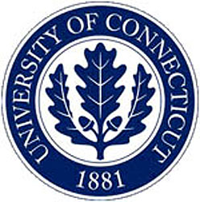

Finite Element Circus, Fall 2026
October 16-17, 2026
The Finite Element Circus is a regular conference devoted to the theory and applications of the finite element method, and related areas of numerical analysis and partial differential equations.
The format is non-traditional -- see the MAIN CIRCUS PAGE for details.
Registration
If you would like to attend, please register online. There is no registration fee. Although in the spirit of the conference everybody is welcome without any registration, it would help the organizers to have an idea of how many people to expect, especially for organizing the dinner.
Register OnlineConference Location
University of Connecticut Avery Point Campus. The conference will take place in the Marine Sciences Building, room 103. The Marine Sciences Building is easy to spot, as it is one of the most recent buildings on the campus. Campus map can be found here..
Schedule Start times are 1:30 PM on Friday and 9:00 AM on Saturday.
- Coffee/tea breaks.
- Lunch provided on Saturday.
- Please indicate on the registration form if you will attend dinner on Friday evening, at Par Four (attendees pay for themselves).
Accommodations
Many other options can be found within 15 to 20 minutes. Mileage shown is approximate driving distance to the Avery Point campus, but driving times may depend heavily on relative amount of local road versus highway usage.- (4.5 mi) Hilton Garden Inn Mystic/Groton A contemporary 3-star hotel featuring free WiFi, an American restaurant, an indoor pool, and a hot tub. (Rated 4.1/5)
- (3.9 mi) Hampton Inn Groton A 3-star hotel offering bright, low-key rooms alongside an indoor pool, fitness center, and complimentary breakfast. (Rated 4.0/5)
- (8.4 mi) SpringHill Suites by Marriott Mystic Waterford A 3-star all-suite hotel located just across the Thames River, featuring an exercise room, indoor pool, and free breakfast. (Rated 4.0/5)
- (2.2 mi) Hilltop Express Inn Groton A 2-star option providing no-nonsense rooms, complimentary breakfast, parking, and an on-site bar. (Rated 3.2/5)
- (3.8 mi) Rodeway Inn Groton - New London A 3-star budget hotel with low-key rooms (some offering whirlpool tubs) and complimentary parking. (Rated 3.0/5)
Driving Directions & Parking
- Address: 1080 Shennecossett Rd, Groton, CT 06340
- GPS Coordinates: (+41° 18' 58.11", -72° 3' 54.66") or (41.316143, -72.065184)
- Click here for official directions on the UConn Avery Point website and parking information.
- About parking: Visitors can park anywhere on campus. Parking is free on Saturday; for Friday parking we can issue passes for no charge (please indicate on registration form). We advise parking in the lot for Project O, right next to the Marine Sciences Building.
Public Transit & Air Travel
- By Train: The Amtrak station in New London is only 6 miles away from the campus, and a few miles from the hotels.
- By Air: The closest airport is T.F. Green (PVD) near Providence, RI. The Logan Airport in Boston and Newark Airport (EWR) have train connections.
- By Bus: Greyhound and Peter Pan have a number of routes from NYC and Providence with stops in New London, CT or Mystic, CT.
Internet Access
Attendees can connect to UCONN-GUEST without needing credentials. Users must accept the acceptable use policy, which automatically loads in the device’s Web browser upon connecting to UCONN-GUEST or browsing to a website. (More information here).
Conference Sponsor
University of Connecticut - Mathematical Sciences Research CollaboratoryLocal Organizers
Jeffrey Connors
(E-mail)
Dmitriy Leykekhman
(E-mail)
